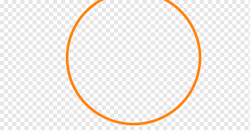

Analista &
Desenvolvedor de Sistemas

Com experiência em SAP e ERP, estou focado no aprimoramento contínuo das minhas habilidades.
Meu interesse está na análise e desenvolvimento de dados, e estou empenhado em fortalecer meu
conhecimento em MySQL, Java, CSS e HTML, além de agregar outros conhecimentos necessários ao
meu portfolio .Minha confiança e resiliência me motivam a fazer a diferença em qualquer ambiente.